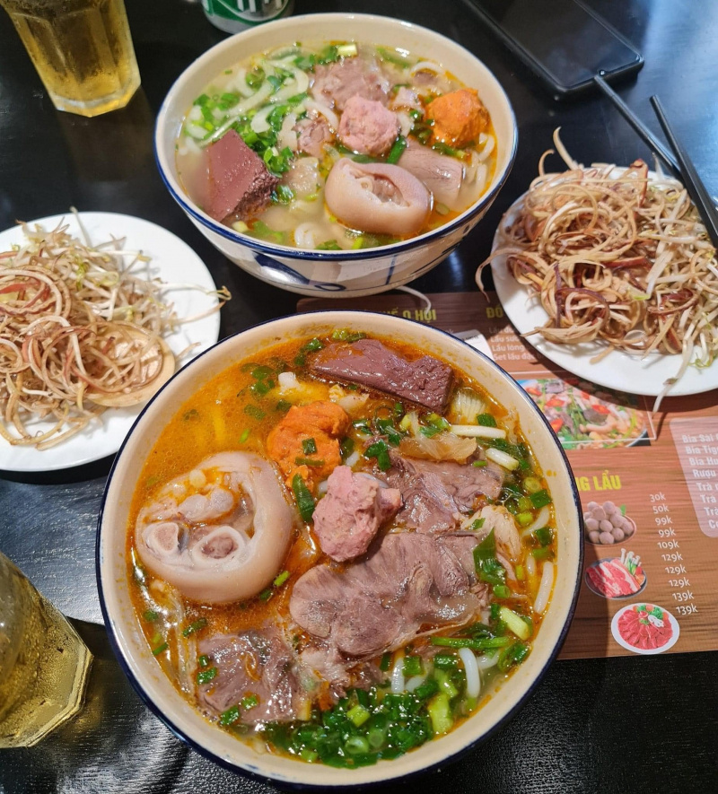

Bun Bo Hue

Bun Bo Hue is a hidden Vietnamese gem that has yet to “make it”
in mainstream American cuisine. It's a rich and spicy
soup with deep layers of flavor. This Central Vietnamese
soup is paired with tender slices of beef and pork, then
topped with lots of fresh herbs.
Ingredients
- 2 lbs pork knuckles
- 1 1/2 lbs boneless beef shank
- 1 1/2 lbs boneless pork shank
- 1/2 lb beef tendon
- 5 quarts water
- 4 stalks lemongrass (tender bottom parts only)
- 10 shallots or 1 large onion
- 1 large chunk ginger
- A quarter of very ripe pineapple or 1 small can of pineapple and all its juices
- 1 tablespoon chicken or mushroom bouillon powder
- 1 1/2 tablespoons fish sauce
- 1 1/2 tablespoons sea salt
- 2 tablespoons fermented shrimp paste
- 30 grams rock sugar
- 1/2 cup vegetable oil
- 1 large shallot (finely diced)
- 2 stalks lemongrass (finely diced bottom tender stalk only)
- 3 garlic cloves (finely diced)
- Fresh chilies (as much as you like)
- 3 tablespoons Bun Bo Hue seasoning premix
- 1 teaspoon fish sauce
- 1 teaspoon granulated sugar
- 2 lbs package dried extra-large rice vermicelli (usually labeled Bun Bo Hue noodles)
- 1 stick Vietnamese ham
- Cooked pork blood
- Green onions (thinly sliced)
- Cilantro (thinly sliced)
- Lemon/lime wedges
- Bean sprouts
- Banana blossom (thinly slice)
- White/purple cabbage (thinly slice)
- Mint leaves
Steps
- Clean the bones and meat: To a large stockpot,
add knuckles, boneless shanks and tendon. Add water to
cover and bring the pot to a boil. When the pot reaches a
rolling boil and impurities float to the top (about 5-7
minutes after boiling), turn off the heat. Place a
colander in the sink and drain the contents of the pot
into the colander. Thoroughly rinse bones/meat under
cold running water and drain dry. Wrap up boneless pork
shank into a tight bundle with twine for easier slicing
later.
- Wash the used pot thoroughly and return it to the
stove. Transfer parboiled bones/meat to the pot and
fill with 5 quarts of water. Smash the lemongrass stalks
and tie them with twine. Peel the shallots/onions and
slice the ginger into thick coins. All all to the
stockpot. Bring the pot to a boil then lower heat to
cook on a low simmer, covered, for 2 hours. Occasionally
skim the surface of the stock to keep it clear.
- After one hour of cooking, pork knuckles should be done
first. Check the knuckles for doneness by piercing it
with a chopstick. When chopstick pierces through easily
without resistance, knuckles are done. Remove and set
aside. After 1 1/2 hours, beef and pork shanks should be
done too. Check for doneness by piercing them with a
chopstick. If there is no resistance and water runs
clear, shanks are done. Remove and set aside with the
knuckles. Beef tendons will cook the longest (about
2 hours). Once done, transfer tendon, shanks, and
knuckles to the refrigerator to cool. For quicker
cooling, place them in an iced bath. Chilling will firm
up the meat and make it easier for slicing. Once chilled,
cut knuckles into bite-size pieces if they are too big,
and thinly sliced the shanks and tendon. Set everything
aside as meaty toppings.
- Remove all remaining solids (onions/shallots, ginger,
lemongrass, and pineapple) from the stockpot. Season
stock with chicken stock powder, fish sauce, sea salt,
rock sugar, and fermented shrimp paste. Add a little at
a time to your liking. For the fermented shrimp paste,
it's best to whisk it together with a bit of stock water
to prevent clumps then pour it into the stockpot.
- Sate sauce: In a small saucepan, heat up vegetable
oil on medium-low heat. Add shallots and lemongrass.
Pan fry for 10 seconds or until fragrant. Add garlic,
your desired amount of chili peppers, and Bun Bo Hue
seasoning packet next. Pan fry for 5 seconds then turn
off the heat to prevent burning. If you can't find
Bun Bo Hue seasoning powder, substitute with paprika or
similar red pepper powder. Season with fish sauce and
sugar. Add sate sauce to the stock. For those with
children or anyone who can't handle spicy food, divide
the stock before adding sate sauce, or simply add sate
sauce to individual bowls instead.
- Cook the noodles for 20 minutes or until soft
(disregard package instructions as I typically find
that it's never long enough). Place a colander in the
sink and drain noodles into the colander. Rinse with
cold water to prevent sticking.
- To assemble, place a handful of noodles into a bowl. Add
desired amount of sliced boneless shanks, pork
knuckles/hocks, sliced Vietnamese ham (Cha Lua/Gio Lua)
and pork blood cubes (if using). Ladle in hot broth.
Garnish with sliced green onions and cilantro.
Serve with a platter of fresh vegetables and lime/lemon
wedges. You can also serve with a small bowl of shrimp
paste and sate sauce on the side for further individual
customizations.